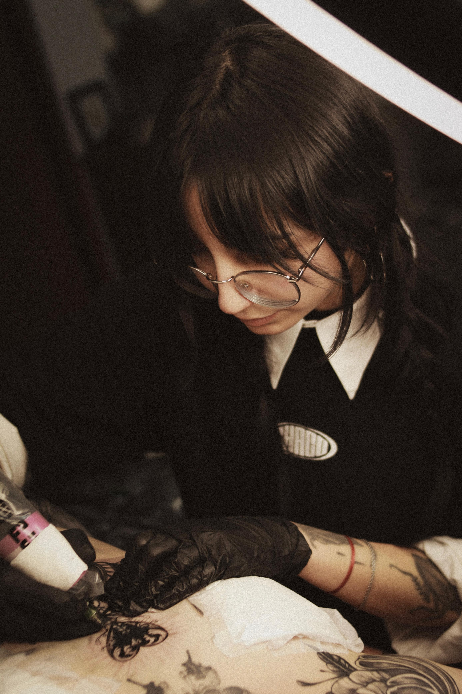

Tatuadora profesional con más de 10 años de experiencia.
Diseños únicos y personalizados, creados para que cada pieza sea tan auténtica como quien la lleva.
- Instagram: @shuko.tatts
- Lugares: CABA y La Plata
- Título: Licenciada en Artes Visuales
- Disponibilidad: Consultar por DM en Instagram
Trabajo con precisión, higiene y dedicación en cada tatuaje, adaptando el diseño a la piel y personalidad de cada cliente.
Si buscás una pieza exclusiva y bien ejecutada, contactame por Instagram y empecemos a crearla.